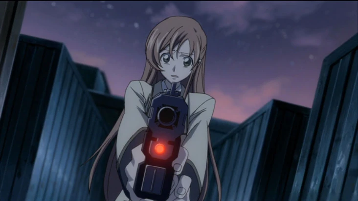
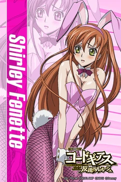
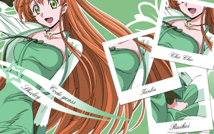

Shirley Fenette
Shirley Fenette is een personage uit de anime
Code Geass: Lelouch of the Rebellion.
Ze is een klasgenoot van Lelouch en Nunnally
op Ashford Academy en staat bekend om haar vriendelijke persoonlijkheid.
Algemene informatie
- Volledige naam: Shirley Fenette
- School: Ashford Academy
- Vrienden: Lelouch Lamperouge, Milly Ashford
- Afkomst: Britannia
Achtergrond
Shirley is een normale studente aan Ashford Academy.
Ze leeft een rustig schoolleven met haar vrienden.
Haar leven verandert wanneer de oorlog en de acties van
de Black Knights invloed hebben op haar familie.
Hierdoor raakt ze betrokken bij de gebeurtenissen rond Lelouch.

Uiterlijk
Shirley heeft lang oranje haar en blauwe ogen.
Ze draagt meestal het schooluniform van Ashford Academy.
Haar uiterlijk is vrolijk en energiek.
Ze wordt vaak afgebeeld met een glimlach.

Persoonlijkheid
Shirley is vriendelijk, zorgzaam en optimistisch.
Ze geeft veel om haar vrienden en helpt anderen graag.
Ze heeft gevoelens voor Lelouch en maakt zich vaak zorgen om hem.
Ondanks moeilijke situaties probeert ze positief te blijven.

Rol in het verhaal
Shirley speelt een emotionele rol in het verhaal.
Ze wordt geconfronteerd met de gevolgen van de oorlog
en de geheimen rond Lelouch.
Haar relatie met Lelouch zorgt voor belangrijke momenten
in de serie.
Belang
Shirley laat zien hoe gewone mensen beïnvloed worden
door oorlog en conflicten.
Haar verhaal brengt veel emotie en menselijkheid
in de serie.